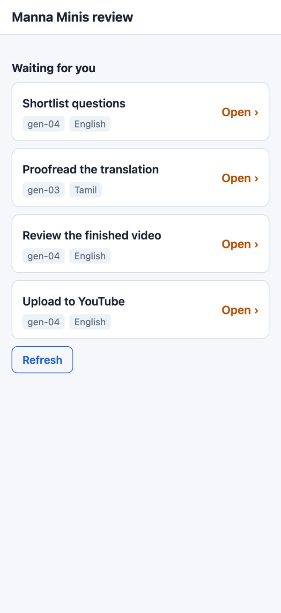
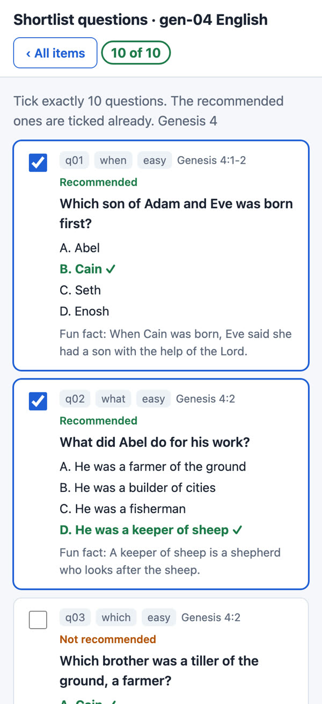
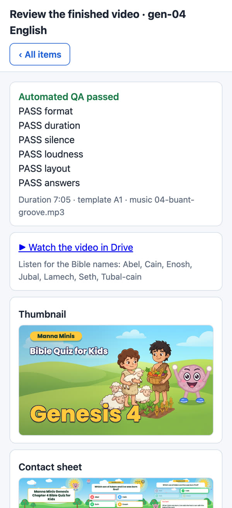

How it works
The Manna Minis pipeline has one user: the owner of the Manna Minis YouTube channel. This page shows what it does and exactly how it uses the YouTube Data API.
From chapter to private upload
- Questions. For each Bible chapter, the pipeline writes quiz questions from the public-domain American Standard Version text.
- Owner review on the phone. The owner picks the questions to keep, approves the thumbnail art, and (for Tamil) proofreads the translation on a private review page that only the owner can open.
- Video. The pipeline records the narration and renders the animated quiz video and its thumbnail.
- QA. Automated checks run (format, length, sound, text layout, correct answers), then the owner watches the video and approves it.
- Private upload. Only after that approval, the pipeline uploads the video to the owner's own channel as private, marked Made for Kids, with its title, description, tags and thumbnail.
- The owner publishes. The owner opens YouTube Studio and presses Publish. The pipeline never makes a video public.
- Status check. Once a day the pipeline reads the uploaded video's privacy status, so it knows when the owner has published it and can archive the files.
The owner's review page



thumbnails.set.YouTube Data API use
| Call | When | What it does |
|---|---|---|
videos.insert(part=snippet,status) | After the owner approves a video | Uploads the video to the owner's channel with privacyStatus: private and selfDeclaredMadeForKids: true, plus title, description, tags, category Education and language. |
thumbnails.set | Right after the upload | Sets the video's custom thumbnail. |
videos.list(part=status) | Once a day, for uploaded videos | Reads the privacy status of the owner's own uploaded videos, to see whether the owner has published them. |
About one or two uploads a day, well inside the default quota. The pipeline does not read or change anything else on YouTube: no comments, no other channels, no analytics, no viewer data.
Sign-in and data
The owner signs in once with Google. The pipeline uses that permission only for the owner's own YouTube channel, Google Drive (video files) and Google Sheets (the review list). Nothing is shared with anyone. See the privacy policy.